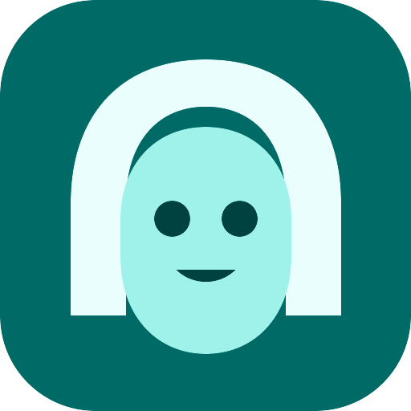
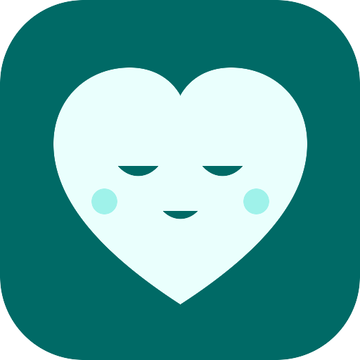
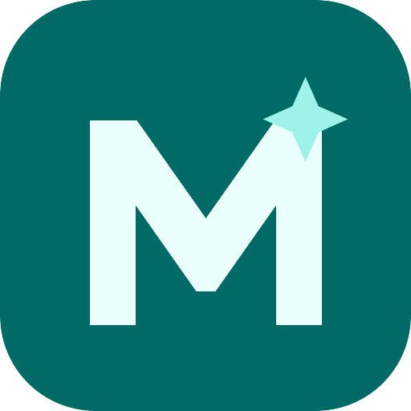
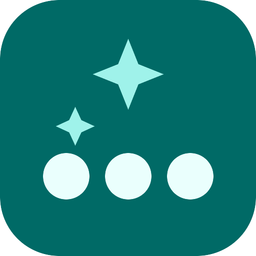

ALengkung Rambut
Paling dekat dengan ikon sekarang, dirapikan: siluet rambut sebagai satu bentuk, wajah mint di depan. Cocok kalau kamu ingin kelanjutan identitas yang sudah ada.
48dp
24dp
Semua digambar sebagai vektor dengan palet Expressive Cyan yang sudah di-ACC (cyan #006A66, mint #9FF2EA, krem #EAFFFD), tanpa gradien, bayangan, atau emoji. Pilih satu huruf, lalu saya jadikan ikon adaptif (safe zone 66/108) dan ganti ikon peluncur, splash, serta tanda merek di dalam aplikasi.

Paling dekat dengan ikon sekarang, dirapikan: siluet rambut sebagai satu bentuk, wajah mint di depan. Cocok kalau kamu ingin kelanjutan identitas yang sudah ada.
Menegaskan fungsi utama aplikasi: teman ngobrol dengan AI. Bentuknya paling sederhana, jadi tetap terbaca di ukuran ikon terkecil.

Mengambil momen headpat (mata menutup) yang jadi ciri khas versi ini. Paling hangat, tetapi detail mata bisa hilang di 24dp.

Bukan wajah, jadi tidak bergantung pada model avatar tertentu. Huruf M dari pita tebal tetap tajam di semua ukuran; percikan mint menambah ciri.

Mengangkat fitur baru: ketuk avatar tiga kali. Abstrak dan mudah diingat, namun keterkaitannya ke avatar tidak langsung terlihat tanpa konteks.
Pratinjau ini dibuat oleh scripts/pratinjau-logo.py;
file vektornya baru ditulis ke ic_launcher_foreground.xml setelah kamu memilih.